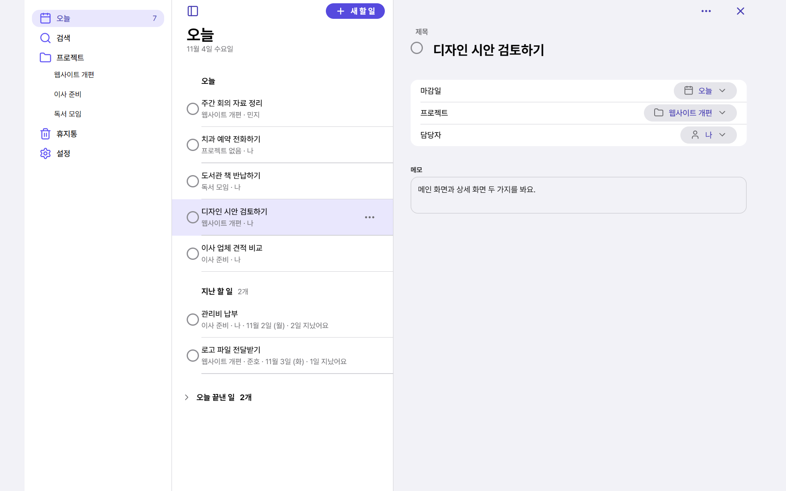
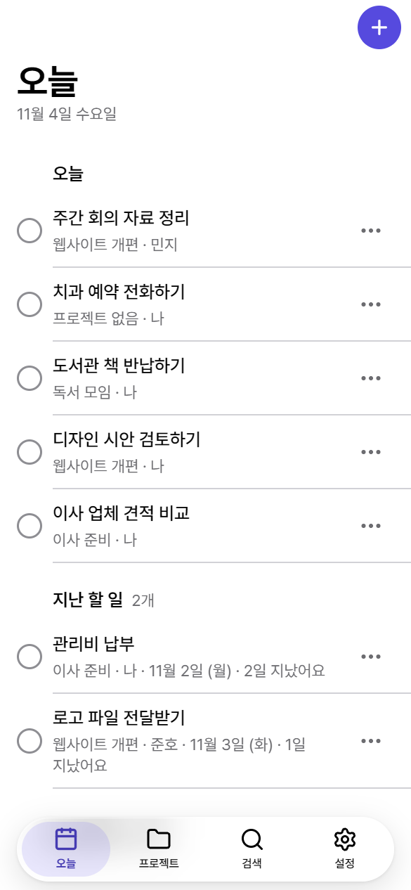
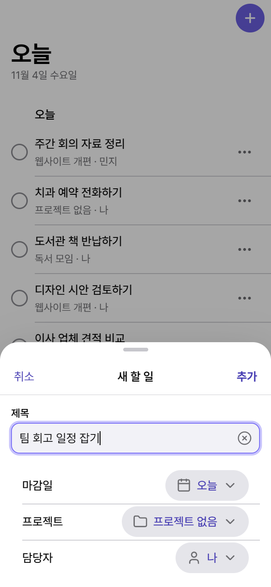
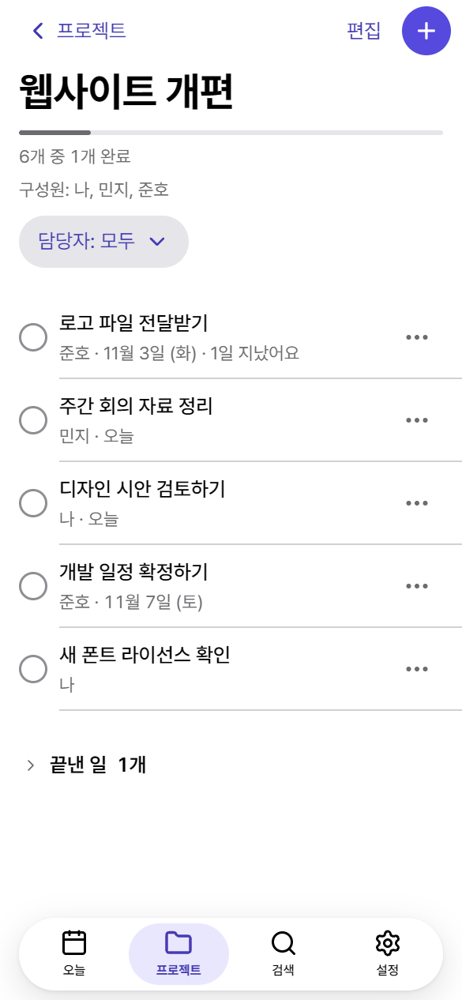

할 일은 한 번에 적어요
새 할 일을 누르면 제목 칸이 바로 열려요. 마감일은 오늘, 담당자는 나로 미리 채워져 있어서 제목만 적으면 돼요.

오늘 끝낼 일이 한 목록에 모여요
오늘이 마감인 일과 지난 할 일이 한곳에 있어요. 동그라미를 누르면 그 자리에서 완료돼요.

프로젝트는 얼마나 왔는지 보여요
할 일을 프로젝트로 묶으면 ‘6개 중 1개 완료’처럼 진행 상황이 막대와 글로 보여요. 담당자별로 골라 볼 수도 있어요.

필요한 것만 작게 담았어요
-
마감일과 담당자
할 일마다 마감일과 담당자를 한 명 정해요. 작은 팀에 필요한 만큼만 있어요.
-
검색
할 일과 프로젝트를 한 번에 찾아요.
-
삭제해도 되돌려요
지우면 바로 ‘실행 취소’가 나와요. 휴지통에서도 복원할 수 있어요.
-
내보내기와 가져오기
설정에서 내 데이터를 파일로 내보내고, 다시 가져와요.
지금 알아 두면 좋은 점
-
데이터는 쓰고 있는 이 브라우저에만 저장돼요.
-
계정과 기기 사이 동기화, 알림은 아직 없어요.
-
구성원은 이 브라우저 안의 이름 목록이에요. 실시간 공유는 아직 없어요.
오늘 할 일부터 적어 보세요
가입 없이 바로 시작해요.
하루 시작하기